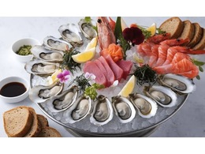
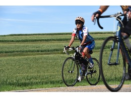

Contact a Tutor
Need help? Meet our tutors and use the links below to contact or schedule a session.
Lead Science Tutor
(All Subjects)
I'm Mrs. Papp and I have been working with My Virtual Academy ever since it started! My favorite part of my job is helping students learn tricky concepts in math and science. My favorite food is pizza. I even get anchovies sometimes! My favorite sports team is the University of Michigan — Go Blue! I have three dogs who always entertain the students I work with.
Schedule with Jennifer • jenniferp@atsedu.net • (586) 327-0939
Science Tutor
(All Science)
My name is Mr. Labostrie. I am in my 11th year at MVA. I am from New Orleans, LA. The favorite part of my job is helping students succeed. My hobbies include music, custom framing, movies, and traveling. My favorite foods are generally seafood — shrimp is a top choice.
Schedule with Alan • alanl@atsedu.net • (586) 422-1743

Science Tutor
(All subjects except Physics)
I am Asha Criner. I am excited to be part of My Virtual Academy. I enjoy helping students with biology and other science topics and making difficult concepts easier to understand. In my free time I enjoy sports, pop-culture, and bike rides.
Schedule with Asha • ashac@atsedu.net • (586) 301-7203

Science Tutor
(All Science)
My name is Rawdah Eddin. I enjoy working with students on science topics and supporting their learning journey. I like baking, reading, and going on walks in my free time.
Schedule with Rawdah • Rawahe@atsedu.net • (586) 326-6344